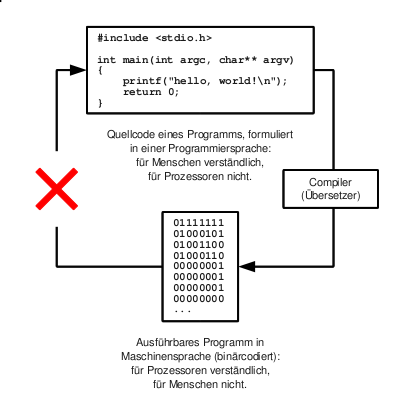

Die technische Notwendigkeit von Freier Software ergibt sich in erster Linie aus dem Umstand, dass Software dafür vorgesehen ist, von einem Prozessor ausgeführt zu werden. Ein Prozessor nimmt freilich nur Maschinencode (binärcodierte digitale Befehle) entgegen. Da die Programmierung von größeren Programmen in Maschinencode höchst uneffektiv oder gar gänzlich unmöglich ist, bedient man sich höherer Programmiersprachen. Der Quellcode eines Programms, welcher in einer Programmiersprache formuliert wurde, wird üblicherweise von einem Compiler in Maschinencode übersetzt (Ausnahme: Interpreter-Sprachen). Bei diesem Vorgang gehen allerdings alle höheren logischen Zusammenhänge verloren, auf den ursprünglichen Quellcode kann kaum zuverlässig rückgeschlossen werden. Aus diesem Grund wird Software so gut wie nie in Form des generierten Binärcodes modifiziert, sondern stets in Form des ursprünglichen Quellcodes, welcher nach Änderung wiederum in ein ausführbares Programm übersetzt werden kann.
Dieser Zusammenhang hat weitreichende Folgen: ein Programmierer ist dadurch in der Lage, eine Anwendung in einer Programmiersprache zu schreiben, in welcher für ihn Anpassungen mühelos vorgenommen werden können, während es für die Ausführung des Programms ausreicht, einem Nutzer ausschließlich den vorkompilierten Maschinencode zur Verfügung zu stellen.